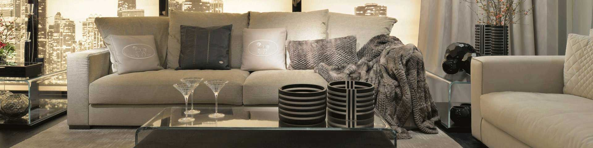

- 
-

国庆节期间，朋友们邀请我去郊外的院子里玩“农家乐”。我发现院子里有各种各样的旧家具。当被问到时，他们都被家人和朋友逼到院子里。
当你打开一个朋友圈，你翻身，你努力，一定有一个“游手好闲”在寻找诗歌和遥远的地方。所谓的“闲人”都是有钱人，所以他们很闲是因为钱。我们大多数人心中只能有一点点憧憬，然后放下手机，结束短暂的呼吸休息时间，重新投入到全面的工作中去
“性价比”的概念远高于“便宜”，在我们的购物中扮演着越来越重要的角色。“比”字让简单的购物选择更加智能化，但“性价比”与谁相比呢？如何比较？我们以办公家具为例。
杭州雅阁红木家具调教中心，回收各类老红木八仙桌、桌、琴桌、太师椅、靠背椅、鸭蛋凳、方凳、三衣柜、书架、台账、梳妆台、大床、茶几等，包括红木碎块、书画扇等，古籍碑文、砚台旧墨、瓷器玉器、竹木雕刻、古琴乐器、旧钟表、西洋饰品、皮箱、樟木箱、宁波香兰、刺绣、手炉、图章等，提供红木家具翻新业务。
医院药品及其回收有严格的药品管理标准。储存药物的医疗家具需要根据这些标准进行设计和定制。
条例提出，推进城市智能环卫系统的开发建设，通过电话或网络预约等方式提高大型垃圾收集的效率和管理水平。市主管部门应当建立全市大型垃圾统一的网络信息系统。区主管部门制定辖区内大型垃圾收集计划，公布预约方式和电话，通过全市统一的网络信息系统提供预约服务。
旧家具回收利用时间长不需要保护。有些单位在处理旧家具时需要很多繁琐的手续。相关部门喜欢把家具保存到一定数量进行一次性加工，这对我们回收家具也是一件好事，所以我们也可以一起搬运。
现在很多人都会通过二手家具回收电话来联系相关的二手家具回收公司，因为很多人在需要这一项服务的时候，他们对于这些公司所处的位置，或者对于他们的服务状况不是很了解，于是它们可能通过网站或者是通过现在很多二手家具回收电话，通过咨询他们的一些负责人员或者管理人员，能够迅速的了解到有关二手家具等相关标准和价格设置，也能够迅速的找到这家公司的所在位置。
对于任何一个商品，都要有自己严格的商品价格标准，这样才能够让消费者更好地进行消费，消费者才能够认清这个商品所固有的价值，能够具有哪些方面的特点和属性，这是非常有必要的，这也是为了能够实现自己公司最好的利益发展，回收二手家具厂家也要抓住这个方面，一定要具有自己严格的价格评判标准，这样才能够让客户对自己的评判方式感到满意和放心，实现双方的合作。
二手沙发回收的价格会受到许多因素的影响，回收公司也制定了详细的回收标准，如果连没要将就的沙发进行回收，最好先了解一下回收公司在回收方面的价格，这样人们就能做一个大概的估算，看看他们给出的价格是否合理，首先沙发回收的价格会受到家具新旧程度的影响。
 电话咨询
电话咨询